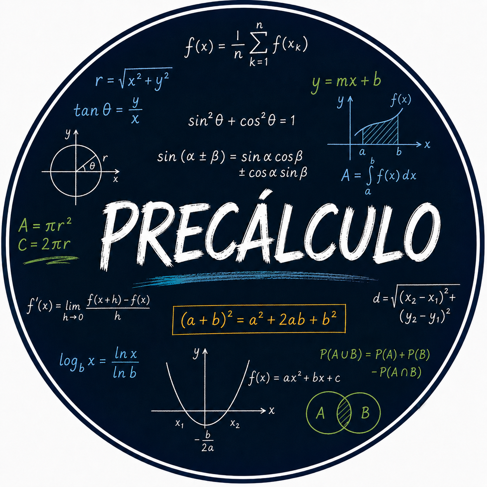

El precálculo constituye una etapa fundamental en la formación matemática, ya que integra y amplía los conocimientos de álgebra, geometría y funciones desarrollados a lo largo de la educación previa. Su estudio prepara las bases para comprender conceptos más avanzados, especialmente los relacionados con el cálculo.
El estudio del precálculo consiste en analizar el comportamiento de funciones, sus representaciones y las relaciones entre diferentes expresiones matemáticas para desarrollar métodos que permitan modelar y resolver una gran variedad de problemas. Su comprensión sólida es esencial para fortalecer el razonamiento lógico y facilitar el aprendizaje de las matemáticas de nivel superior. En este curso, exploraremos los principales conceptos del precálculo con profundidad y claridad.
El curso consiste en clases grabadas con sesiones en vivo, foro de dudas y comentarios, y materiales de apoyo. Esta planeado para ocho semanas.
| Módulo | Tema | Descripción |
|---|---|---|
| 1 | Fundamentos algebraicos | Fortaleceras tus conocimientos en álgebra básica. Aprenderás la resolución de inecuaciones estableciendo las bases para el desarrollo del curso |
| 2 | Conjuntos y funciones | Aprenderás los conceptos fundamentales de conjuntos y funciones, incluyendo representaciones gráficas y algebraicas. |
| 3 | Funciones polinomiales y racionales | Se estudian las características y el comportamiento de las funciones polinomiales y racionales, incluyendo sus gráficas, ceros y asíntotas. |
| 4 | Funciones exponenciales y logarítmicas | Esta unidad aborda las propiedades de las funciones exponenciales y logarítmicas. |
| 5 | Trigonometría | Se desarrollan los conceptos fundamentales de la trigonometría, incluyendo las razones trigonométricas, el círculo unitario, las identidades, las ecuaciones trigonométricas y su aplicación a la construcción de las funciónes trigonométricas |
| 6 | Geometría analítica | Se estudian las herramientas de la geometría analítica para describir y analizar figuras en el plano cartesiano, mediante el uso de ecuaciones de rectas y cónicas, fortaleciendo la interpretación gráfica de funciones. |
| 7 | Introducción al cálculo | En esta unidad se presentan los conceptos fundamentales que dan origen al cálculo, como límites, continuidad y tasa de cambio, proporcionando una base sólida para el estudio posterior de las derivadas y sus aplicaciones. |